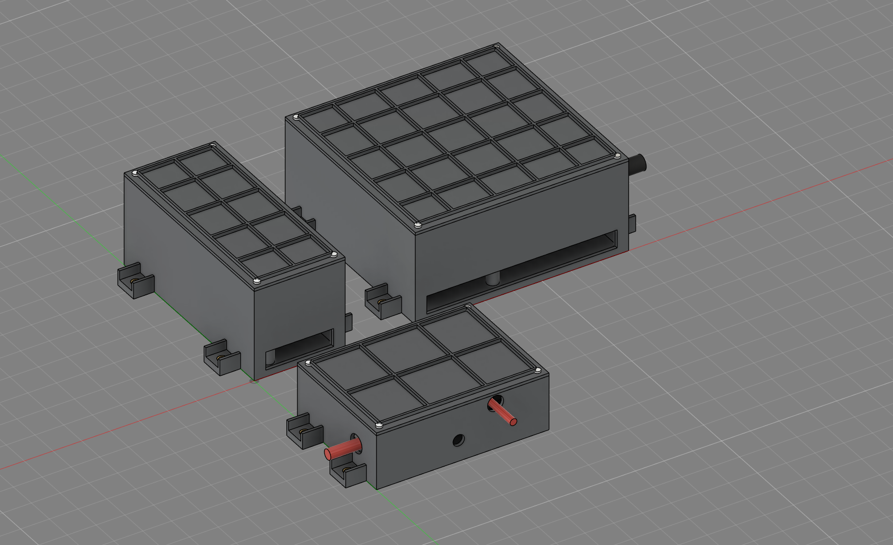
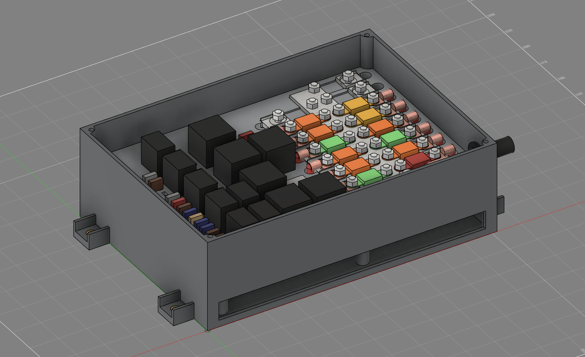
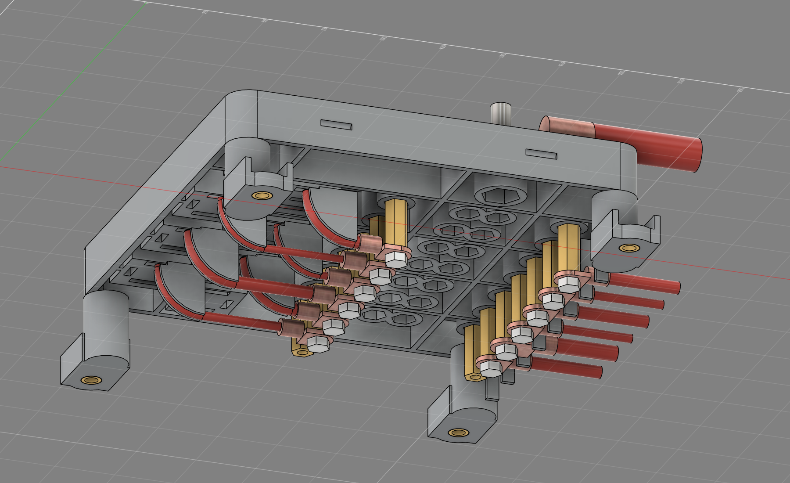
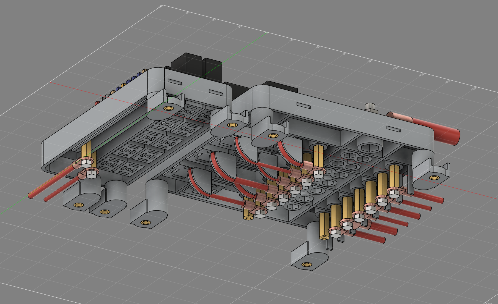
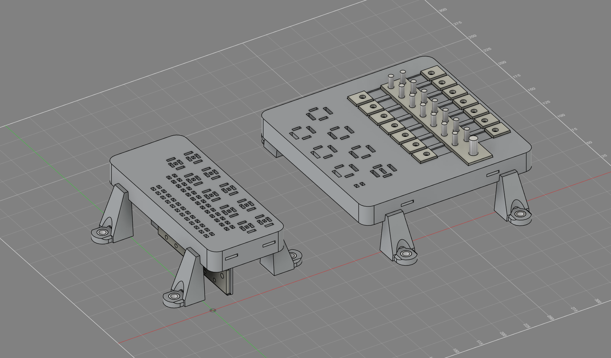
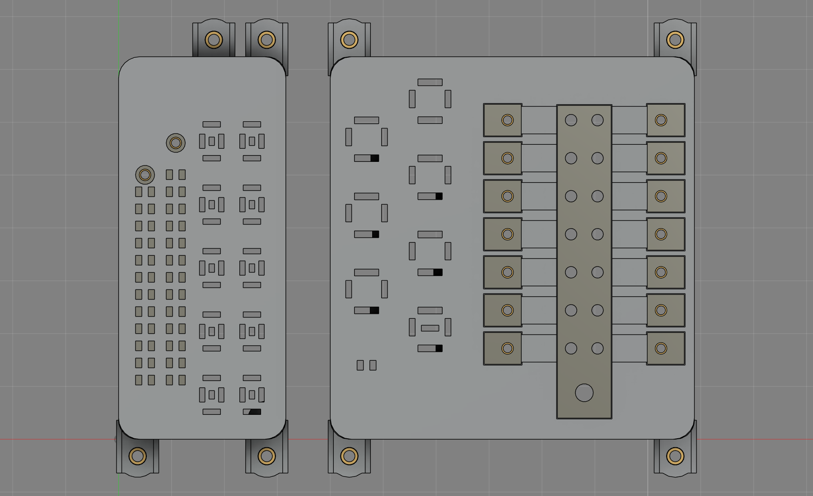
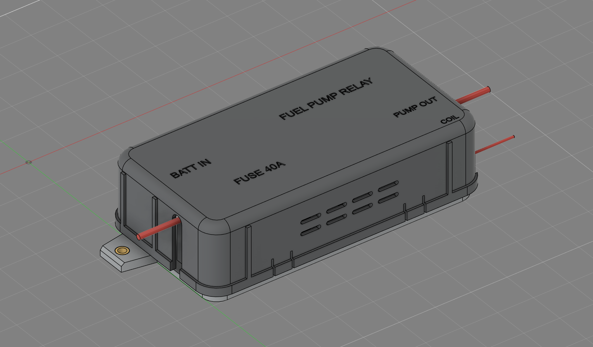
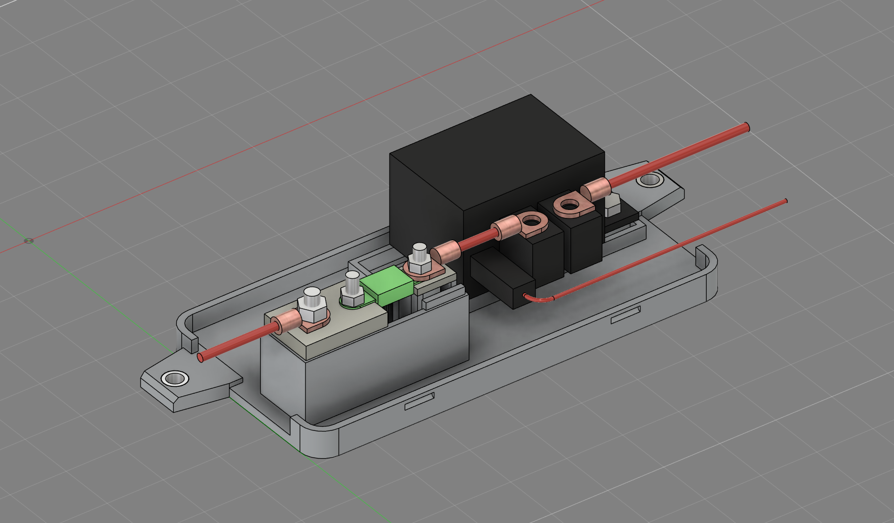
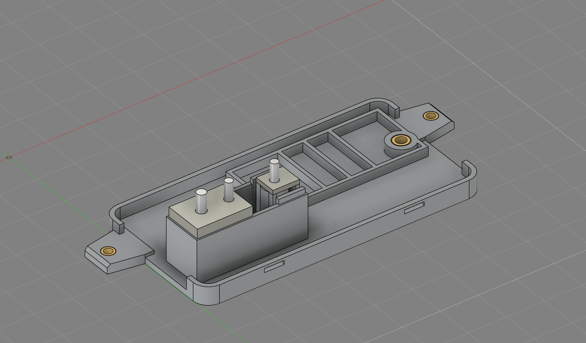
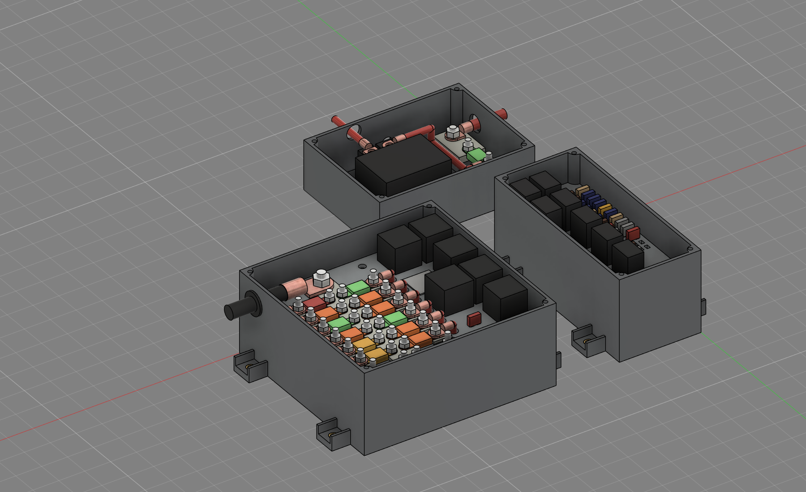

ST185 fuse + relay boxes - CAD rev 4
Claude Code, 2026-10-14. Rev 4 is your review of rev 3 (8 points, all binding), answered below. Same rules as before: PA12 powder-bed print (R73), two glove-box boxes + a trunk relay block (R75), tinned copper stock cut and drilled only (R76). Fusion: the same document, renamed ST185_fusebox_rev4 (was rev 3; no new document, R74). Model files (STEP / STL / f3d) are local, untracked, in cad/fusebox/ of the main checkout. Build: cad/fusebox/src/.


Your review, point by point
- Too tall - bottoms left open. No tray floor and no side slot any more. Each box is now a base (the deck, standing on four corner legs) and a cover. Mount face to cover top: POWER 77.8 mm (was 85), LOGIC 68.9 mm (was 85). Under the POWER deck is 28 mm of open space and under the LOGIC deck 18 mm: that is the room the wires need to bend at your radius (point 4) - the 8 AWG relay feeds set the POWER number. The printed cover itself is only about 42 mm tall.
- Rounded, modern. Covers have R13 corners and R5 rounded top edges all round (no sharp edge anywhere on top), bases R10 corners, round legs; the powder-bed freedom is used for the printed cable saddles and the outboard comb under the POWER deck, which also set the bend radius.
- Snap-on covers. Four cantilever tongues per cover (slotted into the skirt), each with a half-round catch that drops into a pocket in the base. Off: push a small screwdriver into the slot beside a tongue. The battery block snaps the same way (a screw-down was allowed there; not needed).
- Bend radius on every cable. Every heavy cable now leaves its lug dead straight along the lug axis - the AMI output lugs moved under the deck onto brass standoffs, so no cable is bent off a lug inside a box. The only in-box bends are the six relay feeds (AMI to relay terminal 30): one 90 deg bend each, wrapped round a printed R16 saddle. Table below.
- Empty renders. Added: both glove-box boxes and the battery block with no relays or fuses, iso and top, plus an underside view.
- Etched labels. Every relay, fuse and spare position has its name etched 0.6 mm into the cover top, right above it (24 labels on POWER, 38 on LOGIC, 7 on the battery block). List under "Labels".
- Battery block. Style: the Blue Sea Systems 7720 Safety Fuse Block (AMI / MIDI) - my pick (Z9), reasons under "Battery relay block". Open design: a low base with rims on the long sides only and both ends open; no cable holes - cables come in under open notches in the cover ends. Two tabs, one on each long side at mid-length; every cable leaves an end, so nothing crosses a tab. Re-laid on one straight line so its jumper has no bend at all (point 4).
- Pieces and wiring. Each box is 2 printed pieces (base, cover); the battery block too. You wire from below: the base is open underneath, so every terminal cavity, standoff and lug is reachable from the wire side. Crimp, push the terminal up into its cavity until it clicks, bolt the lugs under the deck, then mount the base, then plug the relays and fuses in from the top and snap the cover on. Full order under "How you build it".
Bend radius check (every cable at every lug, stud and terminal)
Rule: FAA AC 43.13-1B CHG 1, par. 11-96 aa (p. 11-44/45) - a bundle no tighter than 10 x the OD of its largest wire; where a wire breaks out at a terminal and is suitably supported, 3 x OD. No cable maker publishes a bend radius for M22759/16 Tefzel or for SGX battery cable (checked: Thermax / ProWire M22759/16 sheet, Southwire SPEC 50050, AWC, Prestolite), so this installation rule is used. OD = maximum from the Thermax M22759/16 sheet; 1/0 SGX 13.6 mm. Gauges from the slot map (ENGINE-ROOM-POWER-REDISTRIBUTION 8.1). "Inside R" is from the model; on the two "bend under the deck" rows it is the most room there is.
| Cable | AWG | OD mm | Path in the box | Inside R mm | Needed | Note | |
|---|---|---|---|---|---|---|---|
| LOGIC BUS1 feed (from AMI BUS1 50 A output) | 8 | 5.13 | straight out under the rear edge, lug axis | no bend | - | OK | no bend in the box; first bend in the harness: >= 15 supported or >= 51 free |
| LOGIC BUS2 feed (from k_efi 87) | 10 | 3.61 | straight out under the rear edge, lug axis | no bend | - | OK | no bend in the box; first bend in the harness: >= 11 supported or >= 36 free |
| LOGIC fuse / micro relay receptacles, largest 12 AWG | 12 | 2.97 | straight down out of the cavity, bend under the deck | 14.0 | 8.9 (3 x OD, supported) | OK | room under the deck before the mount face |
| POWER AMI IN HTR (40A) -> heater terminal 30 | 8 | 5.13 | straight 2 mm, then 90 deg up round the printed saddle into the cavity | 16.0 | 15.4 (3 x OD, supported) | OK | saddle R16 under the deck sets and supports the bend |
| POWER AMI IN EFI (30A) -> k_efi terminal 30 | 12 | 2.97 | straight 33 mm, then 90 deg up round the printed saddle into the cavity | 16.0 | 8.9 (3 x OD, supported) | OK | saddle R16 under the deck sets and supports the bend |
| POWER AMI IN STR (30A) -> k_str terminal 30 | 12 | 2.97 | straight 3 mm, then 90 deg up round the printed saddle into the cavity | 16.0 | 8.9 (3 x OD, supported) | OK | saddle R16 under the deck sets and supports the bend |
| POWER AMI IN FAN (40A) -> k_fan terminal 30 | 8 | 5.13 | straight 32 mm, then 90 deg up round the printed saddle into the cavity | 16.0 | 15.4 (3 x OD, supported) | OK | saddle R16 under the deck sets and supports the bend |
| POWER AMI IN FAN2 (30A) -> k_fan2 terminal 30 | 8 | 5.13 | straight 2 mm, then 90 deg up round the printed saddle into the cavity | 16.0 | 15.4 (3 x OD, supported) | OK | saddle R16 under the deck sets and supports the bend |
| POWER AMI IN PWR (30A) -> power terminal 30 | 10 | 3.61 | straight 33 mm, then 90 deg up round the printed saddle into the cavity | 16.0 | 10.8 (3 x OD, supported) | OK | saddle R16 under the deck sets and supports the bend |
| POWER AMI OUT BUS1 (50A) -> harness | 8 | 5.13 | straight out under the outboard end, lug axis | no bend | - | OK | no bend in the box; first bend in the harness: >= 15 supported (P-clamp each side) or >= 51 free |
| POWER AMI OUT RTR (30A) -> harness | 10 | 3.61 | straight out under the outboard end, lug axis | no bend | - | OK | no bend in the box; first bend in the harness: >= 11 supported (P-clamp each side) or >= 36 free |
| POWER AMI OUT AM1 (40A) -> harness | 8 | 5.13 | straight out under the outboard end, lug axis | no bend | - | OK | no bend in the box; first bend in the harness: >= 15 supported (P-clamp each side) or >= 51 free |
| POWER AMI OUT AM2 (30A) -> harness | 10 | 3.61 | straight out under the outboard end, lug axis | no bend | - | OK | no bend in the box; first bend in the harness: >= 11 supported (P-clamp each side) or >= 36 free |
| POWER AMI OUT JB1 (60A) -> harness | 6 | 6.43 | straight out under the outboard end, lug axis | no bend | - | OK | no bend in the box; first bend in the harness: >= 19 supported (P-clamp each side) or >= 64 free |
| POWER AMI OUT EPS (60A) -> harness | 8 | 5.13 | straight out under the outboard end, lug axis | no bend | - | OK | no bend in the box; first bend in the harness: >= 15 supported (P-clamp each side) or >= 51 free |
| POWER 1/0 input (M8 on the bar) | 1/0 | 13.60 | straight in through the cover end notch, lug axis | no bend | - | OK | no bend in the box; first bend outside >= 41 supported / >= 136 free |
| POWER relay terminals (85 / 86 / 87 / 87a), largest 8 AWG | 8 | 5.13 | straight down out of the cavity, bend under the deck | 23.4 | 15.4 (3 x OD, supported) | OK | room under the deck before the mount face; tie each bend to the saddle row / comb |
| BATTERY feed in (kill switch load side) -> M6 stud | 10 | 3.61 | straight in at the open -x end, lug axis | no bend | - | OK | no bend in the block; first bend outside >= 11 supported / >= 36 free |
| BATTERY AMI 40 out -> HCR150 terminal 3 | 10 | 3.61 | one straight jumper, both lugs at the terminal height | no bend | - | OK | no bend (the AMI pedestal puts its lug level with terminal 3) |
| BATTERY HCR150 terminal 5 -> pump | 10 | 3.61 | straight out the open +x end, lug axis | no bend | - | OK | no bend in the block; first bend outside >= 11 supported / >= 36 free |
| BATTERY coil lead (Superseal plug) -> Link Aux 3 | 20 | 1.57 | one 90 deg turn, then along the front to the +x end | 6.2 | 4.7 (3 x OD, supported) | OK | held by the plug and the cover notch; 3 x OD = 4.7 |
Every cable stub was also checked against every printed part in Fusion: no contact. The first bend outside a box is in the harness route: keep it to the "Note" figure - 3 x OD with a P-clamp or tie each side of the bend, otherwise 10 x OD.


Empty boxes (terminal slots)


How you build it
POWER box (2 printed pieces)
- Press a brass limiter into each of the 4 ears.
- Bench, base right way up: lay the bar in its pocket and the 14 pads in theirs. From below, push the M5 x 16 bolts (and the M8 x 20 for the 1/0) up through the hex head pockets and the bar holes.
- From below, slide a brass standoff up each hex hole until it meets its pad; from the top, screw an M5 set screw through the pad into it.
- Turn the base over (wire side up). Crimp the relay terminals, push each one up into its cavity until it clicks. Crimp the AMI output cables and bolt each lug to the bottom of its standoff (M5 x 10; the hex hole holds the standoff). The six relay feeds go lug -> straight -> round their saddle -> into terminal 30; tie each to its saddle.
- Right way up: AMI fuses on the studs, Keps nuts 4 Nm max; 1/0 lug on the M8.
- Mount the base in the glove box by its 4 ears (M5 through the limiters); the cables leave underneath between the legs.
- Plug the relays and the ACPS fuse in from the top, snap the cover on.
LOGIC box (2 printed pieces)
- Limiters in the ears. From below, slide the two strips up into their pockets.
- Standoff under each strip end; M5 bolt down from the top (head in its hex pocket) into the standoff; feed lug under the standoff (M5 x 10).
- Wire side up: crimp and push in the mini-fuse and micro-relay terminals from below.
- Mount by the 4 ears (the two rear legs sit at x 45 / 70 so the Bus 1 / Bus 2 feeds leave the rear straight).
- Fuses and micro relays in from the top, snap the cover on.
Battery block (2 printed pieces)
- From below, an M6 nut into each of the 2 hex pockets under the relay platform; limiters in the tabs and the 2 flange bosses.
- Drop the 3 bolt heads into the pedestal pockets (top), lay the bar and the pad on.
- HCR150 on its platform, 2 M6 bolts down through the flange into the captured nuts.
- AMI 40 on, jumper (two lugs, one straight 18 mm cable) from the AMI out to terminal 3, pump cable on terminal 5, coil plug on.
- Mount by the 2 tabs (passenger side of the trunk, between the rear wall and the battery - Z4), snap the cover on.
To service a relay terminal later: unbolt the base's ears and lift it - the bottom is open, nothing else holds it.
Battery relay block
Style pick (Z9: Dan left it to me) - Blue Sea Systems 7720 Safety Fuse Block (AMI / MIDI)
Chosen by Claude (Dan, Z9 2026-10-14: "your pick"; DECISIONS S27). It fits all four asks: open frame (a low base and a cover - no closed tub); lid on, no screws (the cover is a separate part that comes off by hand); no cable holes (its cover breakouts give wire access from three directions, so cables come in under the cover, not through the base); and it takes the same AMI fuse we use, built for wet, vibrating places (marine). 125 x 38 mm for one fuse (Blue Bottle Marine listing BS-7720). The one change: its 2 fixings become 2 side tabs so no cable leaves over a tab. Not chosen: Bussmann RTMR (a Mini ISO / mini-fuse module - no room for the HCR150 and an AMI); MTA / Littelfuse sealed power-distribution boxes (closed tubs with cable seals, i.e. holes, the opposite of open); Blue Sea MRBF terminal blocks (they sit on the battery post).
| Dan asked for | How the block meets it |
|---|---|
| Open frame | Low floor plate, rims on the two long sides only, both ends open - the cover is the only enclosure. |
| Snap or screw lid | Snap: 4 cantilever tongues into pockets in the side rims (no screws, no inserts). |
| 2 tabs | One tab on each long side at mid-length (x 92), M5 through a brass limiter. |
| No cable over a tab | Battery feed in at the -x end, pump cable and coil lead out at the +x end; nothing leaves a long side. |
| No cable holes | Cables pass under open notches in the cover ends (the 7720 breakout idea); the base has no holes for cables. |



Labels (etched in the covers)
Logic: HEAD L, HEAD R, HORN, ETB, A/C, EPS EN, REV, SPARE, SPARE, SPARE, EFI86 5, HL 15, HR 15, HZ 15, DM 20, WL 15, ALM 5, ALMS 2, ALTS 2, ETB 10, SP, SP, LAM 7.5, SW12 7.5, COP 15, INJ 15, CSB 5, DEV 15, EPSEN 7.5, ACC 10, ALMIG 2, SP, SP, MRS 7.5, B30 2, BUS1, BUS2, LOGIC
Power: HEATER, EFI, STARTER, FAN, FAN 2, WINDOWS, SPARE, ACPS 10A, HTR 40A, EFI 30A, STR 30A, FAN 40A, FAN2 30A, PWR 30A, SPARE, BUS1 50A, RTR 30A, AM1 40A, AM2 30A, JB1 60A, EPS 60A, SPARE, 1/0 IN, POWER
BattRelay: BATT +, FP 40A, K_FP FUEL PUMP, 3, 5, PUMP, COIL
Slot map
| Unit | Position | Fuse / relay | Part | Wire |
|---|---|---|---|---|
| POWER | AMI IN-1 | HTR | AMI-40 | 8 AWG |
| POWER | AMI IN-2 | EFI | AMI-30 | 12 AWG |
| POWER | AMI IN-3 | STR | AMI-30 | 12 AWG |
| POWER | AMI IN-4 | FAN | AMI-40 | 8 AWG |
| POWER | AMI IN-5 | FAN2 | AMI-30 | 8 AWG |
| POWER | AMI IN-6 | PWR | AMI-30 | 10 AWG |
| POWER | AMI IN-7 | spare | - | - |
| POWER | AMI OUT-1 | BUS1 | AMI-50 | 8 AWG |
| POWER | AMI OUT-2 | RTR | AMI-30 | 10 AWG |
| POWER | AMI OUT-3 | AM1 | AMI-40 | 8 AWG |
| POWER | AMI OUT-4 | AM2 | AMI-30 | 10 AWG |
| POWER | AMI OUT-5 | JB1 | AMI-60 | 6 AWG |
| POWER | AMI OUT-6 | EPS | AMI-60 | 8 AWG |
| POWER | AMI OUT-7 | spare | - | - |
| POWER | R1 (column A) | heater (fed by AMI IN-1) | 1-1904020-2 (BUY) | |
| POWER | R2 (column B) | k_efi (fed by AMI IN-2) | 1-1414147-0 (OWN) | |
| POWER | R3 (column A) | k_str (fed by AMI IN-3) | 1-1414147-0 (OWN) | |
| POWER | R4 (column B) | k_fan (fed by AMI IN-4) | 1-1414147-0 (OWN) | |
| POWER | R5 (column A) | k_fan2 (fed by AMI IN-5) | 1-1393304-0 (OWN) | |
| POWER | R6 (column B) | power (fed by AMI IN-6) | 1-1393304-0 (OWN) | |
| POWER | R7 (column A) | SPARE (fed by AMI IN-7) | - | |
| POWER | front of column B | ACPS mini fuse (heater 87) | ATM-10 | |
| LOGIC | BUS1 (12) | EFI86 5, HL 15, HR 15, HZ 15, DM 20, WL 15, ALM 5, ALMS 2, ALTS 2, ETB 10, spare, spare | ATM | feed 8 AWG |
| LOGIC | BUS2 (13) | LAM 7.5, SW12 7.5, COP 15, INJ 15, CSB 5, DEV 15, EPSEN 7.5, ACC 10, ALMIG 2, spare, spare, MRS 7.5, B30 2 | ATM | feed 10 AWG |
| LOGIC | M11 | HEAD LH | 5-1393292-8 (OWN) | |
| LOGIC | M12 | HEAD RH | 5-1393292-8 (OWN) | |
| LOGIC | M13 | horn | 4-1904124-3 (OWN) | |
| LOGIC | M14 | k_etb | 4-1904124-2 (OWN) | |
| LOGIC | M15 | k_acc | 6-1419137-4 (OWN) | |
| LOGIC | M21 | k_eps_en | 6-1419137-4 (OWN) | |
| LOGIC | M22 | k_rev | 6-1419137-4 (BUY) | |
| LOGIC | M23 | spare | - | |
| LOGIC | M24 | spare | - | |
| LOGIC | M25 | spare | - | |
| BATTERY | F1 | FP fuse 40 A | AMI-40 | 10 AWG |
| BATTERY | K1 | k_fp fuel pump relay | 1416010-1 HCR150 (OWN) | 10 AWG |
Printed parts (PA12, powder-bed)
| Part | File (STL + STEP) | Size mm (x y z, incl. ears / tabs) | Volume / mass | What it is |
|---|---|---|---|---|
| Logic Base | Logic_Base_PA12_printed.stlLogic_Base_PA12_printed.step | 81.0 x 217.0 x 39.5 | 190.7 cm³ / ~193 g | Same idea: deck on four legs, strip pockets open underneath, mini-fuse and micro-relay cavities through. |
| Logic Cover | Logic_Cover_PA12_printed.stlLogic_Cover_PA12_printed.step | 84.9 x 186.9 x 42.4 | 88.1 cm³ / ~89 g | Rounded shell, 2.5 mm wall, R13 plan corners, R5 top edges; 4 snap tongues; labels etched 0.6 deep into the top. |
| Power Base | Power_Base_PA12_printed.stlPower_Base_PA12_printed.step | 174.0 x 217.0 x 48.5 | 372.7 cm³ / ~376 g | The deck on four corner legs: 6 mm top plate, 3 mm skirt, cavity towers, standoff and bolt-head bosses, ribs; open underneath. Six printed saddles (R16) and an outboard comb hang under it. Ears point front / rear, brass limiter in each. |
| Power Cover | Power_Cover_PA12_printed.stlPower_Cover_PA12_printed.step | 177.9 x 186.9 x 42.3 | 148.0 cm³ / ~149 g | Rounded shell, 2.5 mm wall, R13 plan corners, R5 top edges; 4 snap tongues; labels etched 0.6 deep into the top. |
| BattRelay Base | BattRelay_Base_PA12_printed.stlBattRelay_Base_PA12_printed.step | 184.0 x 128.0 x 36.2 | 112.5 cm³ / ~114 g | Low floor plate, rim on the long sides only (both ends open), relay platform with 2 captured M6 nuts + limiters, pedestal under the bar and pad, 2 tabs (one each long side). |
| BattRelay Cover | BattRelay_Cover_PA12_printed.stlBattRelay_Cover_PA12_printed.step | 189.9 x 97.9 x 47.5 | 102.4 cm³ / ~103 g | Rounded shell, 2.5 mm wall, R13 plan corners, R5 top edges; 4 snap tongues; labels etched 0.6 deep into the top. |
Mass at the HP PA12 density 1.01 g/cm³. Metal parts are STEP only, plus the whole assembly (ST185_fusebox_rev4_assembly.step).
Designed for powder-bed printing
- Walls: 3 mm base skirt, 6 mm deck plate, 2.5 mm towers, ribs, gussets and cover walls. Nothing under 2.0 mm.
- No trapped powder: bases are open underneath, covers are open shells; no closed cavity anywhere.
- Fits: 0.45 mm per side printed to printed (cover over base); 0.4 mm per side metal in a printed pocket.
- Snaps: tongue 12 wide, 11 long between two 1.2 slots, half-round catch 2.4, about 0.75 mm of engagement - within what PA12 takes repeatedly.
- Threads: none printed, and no heat-set inserts now (the covers snap). Every bolt goes into metal: standoffs, nuts, captured heads.
- Torque into metal: pad, standoff and lug are clamped metal to metal; the hex holes only stop the standoffs and bolt heads turning. The HCR150 flange clamps onto brass limiters over captured nuts.
- Heat: PA12 HDT 95 °C at 1.82 MPa. The 1" x 1/4" copper bar is three times the 1/0 copper; bench check at full load with a thermocouple anyway.
- Live-part spacing (measured in Fusion): AMI pads 3.0 mm apart (printed rib between), bar to any output 17.1, 1/0 lug to nearest output 8.2, output lugs under the deck 5.5, standoffs 10.0; Bus 1 / Bus 2 strips 4.5, their feed lugs 5.1; battery bar to pad 17.0, HCR150 lugs 5.0.
Interference check (all three units, every printed, copper and bought part): none.
Parts list (OWN / BUY)
Order: on-hand TE list, then TE, then approved suppliers, then others with a reason (R38). "OWN" counts are qty_ordered from te-on-hand-bom.csv - confirm on the shelf. TBD = not checked against a maker sheet yet. Rev 4 drops the M3 heat-set inserts and lid / deck screws.
| Part | Part number | Qty | Note |
|---|---|---|---|
| Relay F7 Mini ISO, 680 ohm | 1-1414147-0 (V23134-J0052-X429) | OWN 3 | k_efi, k_str, k_fan. te-on-hand-bom.csv qty_ordered 3 - confirm on the shelf. |
| Relay F7 Mini ISO, bracket, 560 ohm | 1-1393304-0 (V23134-J1052-X281) | OWN 2 | k_fan2, power. Bracket not used (cut off or fold flat). |
| Relay Power Relay B, 1 form C, 680 ohm | 1-1904020-2 (V23234-A0001-X032) | BUY 1 | heater (87a to ground, row 106). TE (step 2). NO 35 A at 85 C. |
| Micro relay A, NO, diode | 5-1393292-8 | OWN 2 | HEAD LH / RH (LOGIC box) |
| Micro relay A, NO | 4-1904124-3 | OWN 1 | horn |
| Micro relay A, NO, resistor | 4-1904124-2 | OWN 1 | k_etb |
| Micro relay A, CO, diode | 6-1419137-4 | OWN 2 + BUY 1 | k_acc, k_eps_en (own); k_rev (buy) |
| HCR150 relay, 130 A, IP67 | 1416010-1 (V23132-A2001-B200) | OWN 2 | k_eps beside the POWER box; k_fp in the battery block. |
| HCR150 coil plug: Superseal 1.5 2-pole housing | 282080-1 | BUY 1 | TE, from the HCR150 data sheet (k_fp). |
| Superseal 1.5 contact / seal | 282110-1 / 281934-2 | OWN 2 / BUY 2 | 282110-1 is on hand (qty_ordered 10). |
| AMI bolt-in fuse | Bussmann AMI-30 / -40 / -50 / -60 | BUY 6 / 4 / 1 / 2 | incl. the battery block AMI-40. Other maker (R38 step 4): TE makes no bolt-in fuse. |
| Mini blade fuse (ATM) | Bussmann ATM-2 / 5 / 7.5 / 10 / 15 / 20 | BUY 4 / 3 / 4 / 3 / 7 / 1 | ratings 2A x4, 5A x3, 7.5A x4, 10A x3, 15A x7, 20A x1. Other maker: TE makes no blade fuse. |
| FASTON 9.5 receptacle, 12-10 AWG | 280756-4 | BUY 12 | Mini ISO 30 / 87 (6 relays). TE. Fans / heater 87 are 8 AWG: receptacle for 8 AWG TBD (check the TE range). |
| FASTON 6.35 receptacle, 18-14 AWG | 42281-1 | OWN 20 + BUY ~7 | Mini ISO 85 / 86 (12) + heater 87a (1) + micro 6.3 load blades (~14). qty_ordered 20. |
| 4.8 mm receptacle (micro coil blades) | TBD | - | TBD: TE 4.8 x 0.8 receptacle for 18-20 AWG - pick in detail work. |
| 2.8 mm receptacle (mini fuse) | TBD | - | TBD: 880398-2 is a candidate (plan S12), fit on an ATM blade not confirmed. |
| Tubular lug 10 mm2 M5 (8-10 AWG) | Klauke 2R5 | BUY 12 | AMI outputs and relay feeds on 8-10 AWG, the 2 LOGIC feeds, the battery block AMI out. All sit under the deck on a standoff. |
| Ring lug M5 for 12 AWG (EFI, STR relay feeds) | TBD | BUY 2 | TBD: a TE PIDG / Solistrand ring tongue for 12-10 AWG with an M5 hole - not checked against the TE catalog yet. Klauke 2R5 is for 10 mm2 and too big for 12 AWG. |
| Tubular lug 16 mm2 M5 (J/B1 HOT, 6 AWG) | Klauke 3R5 | BUY 1 | b 13, l 26, d4 8.5, hole 5.5 (Klauke table, Kempston Controls 3R10.pdf). |
| Tubular lug 50 mm2 M8 (1/0 input) | Klauke 6R8 | BUY 1 | b 20, l 47, hole 8.4 (RS 398-3015 listing). |
| Ring lug M6, 10 AWG (battery block: feed in, relay 3, relay 5) | TBD | BUY 3 | TBD: Klauke R series M6 for 6 mm2 - not checked against the Klauke sheet yet. |
| Brass hex standoff M5 female-female, 8 AF, 40 long | TBD | BUY 14 | NEW in rev 4: carries each AMI output (and relay feed) from the pad down to its lug under the deck; its hex sits in a printed hex hole so it cannot turn. TBD: not a TE line and none of the approved suppliers lists standoffs (R38 step 4) - pick a brass one from a maker sheet (e.g. Keystone / Wurth) in detail work. Current: brass C360 hex, ~36 mm2 after the thread, 40 mm long = about 0.07 mOhm, 0.25 W at 60 A. |
| Brass hex standoff M5 female-female, 8 AF, 25 long | TBD | BUY 2 | LOGIC strip feeds (Bus 1 / Bus 2), same pick as above. |
| Set screw M5 x 12 A2 (stud on top of each standoff) | ISO 4026 M5x12 | BUY 14 | Screws into the standoff top through the pad; AMI ear + Keps nut on it, 4 Nm max (AMI sheet). |
| Hex bolt M5 x 10 A2 (lug under each standoff) | ISO 4017 M5x10 | BUY 14 | One per used AMI output + the 2 LOGIC feeds. |
| Hex bolt M5 x 16 A2 + Keps nut | ISO 4017 M5x16 + DIN 6923 M5 | BUY 18 | AMI input studs on the bars (POWER 14, battery 2) + the 2 LOGIC strip bolts (head on top). Head captured in a printed hex pocket. |
| Keps nut M5 A2 | DIN 6923 M5 | BUY 15 | AMI output nuts. |
| Hex bolt M8 x 20 / M6 x 16 A2 + nut + washer | ISO 4017 + ISO 4032 + ISO 7089 | BUY 1 + 3 | POWER 1/0 input (M8); battery feed stud + the 2 HCR150 flange bolts (M6, nut captured under the floor). |
| Brass compression limiter, M5 / M6 | TBD (OD 8, ID 5.3, L 6 / OD 10, ID 6.5, L 4.6) | BUY 10 / 2 | 8 glove-box ears + 2 battery tabs / the 2 HCR150 flange bolts. |
| Power bars, output pads, logic strips | tinned copper flat bar - see "Copper" | BUY 3 stock bars | Off the shelf; cut and drill only (R76). |
| Bases and covers | PA12, powder-bed (MJF / SLS) | print 6 parts | See "Printed parts". No screws, no heat-set inserts: the covers snap on. |
Copper - tinned, off the shelf, cut and drilled only (R76)
Copper in the model: 398 g.
Power bars (POWER box 148 mm + battery block 36.5 mm)
| Part | Seller / part number | Size mm (W x T x L) | Price | Note | |
|---|---|---|---|---|---|
| PICK | MECCANIXITY 12" x 1" copper flat bar, 1/4" thick, tinned | Amazon B0CGJBRNJX | 25.4 x 6.35 x 305 | $26.19 | One bar makes both power bars with 120 mm left over. |
| runner-up | Tinned copper flat bus bar 3 x 25 x 200 mm, C110 (Bopaodao listing) | Amazon B09Z7KJV65 | 25 x 3 x 200 | $27.79 | Thinner: still 75 mm2 of copper (> the 53 mm2 1/0 feed); 200 mm covers the POWER bar only. |
| runner-up | TEN-HIGH tinned copper flat bar 5 x 30 x 1000 mm | Amazon B08NT3YSXT | 30 x 5 x 1000 | $109.49 | Plenty of stock; 30 wide needs a 5 mm wider bar pocket. |
Output pads (14 POWER + 1 battery block, 17.5 long each)
| Part | Seller / part number | Size mm (W x T x L) | Price | Note | |
|---|---|---|---|---|---|
| PICK | Tinned copper flat bus bar 3 x 15 x 1000 mm, C110 (Bopaodao listing) | Amazon B09Z7NBLDK | 15 x 3 x 1000 | $51.99 | 15 pads use 290 mm with saw kerf; the rest is spare. |
| runner-up | Same stock, 3 x 15 x 200 mm | Amazon B09Z7N2CP6 | 15 x 3 x 200 | $24.99 each (buy 2) | 10 pads per piece. |
| runner-up | MECCANIXITY 2 pcs 12" x 1" x 1/8" tinned | Amazon B0CGJC2S1L | 25.4 x 3.2 x 305 (2) | $27.19 | Pads would be 25.4 long, not 17.5 - the box grows about 8 mm; only if the 15 mm stock is gone. |
Logic strips (Bus 1 110 mm, Bus 2 125 mm)
| Part | Seller / part number | Size mm (W x T x L) | Price | Note | |
|---|---|---|---|---|---|
| PICK | Tin-plated copper bus bar 716426, 1000 x 10 x 3 mm | Nassau National Cable 716426 | 10 x 3 x 1000 | $60.09 | Both strips from one length. |
| runner-up | Tinned C110 copper bus bar 3 x 10 x 1000 mm | Amazon B0GWHX98C1 | 10 x 3 x 1000 | $166.91 | Same size, much dearer. |
| runner-up | Nickel-plated copper flat bus bar 3 x 10 x 1000 mm (Bopaodao listing) | Amazon B0B1VKYJS1 | 10 x 3 x 1000 | $56.99 | Nickel, not tin - fine against tinned terminals, but not what R76 asks for. |
Ready-made option checked: Bussmann LMI (AMI modules on a common bus bar, B109-7046-x) - The only ready-made AMI bus found. It is R18 Option B, which R70 replaced: 25 mm per position (vs 18 here) and its own housings, so it does not fit the printed boxes. Prices seen 2026-10-14, they move. None is a TE part: TE sells no bar stock (R38 step 4).
Cut and drill drawings
All holes are plain through holes, deburred, no tapping. Cut square, break the edges. Re-tin cut ends and holes if you like (optional at 12 V under a cover). End A is the forward (firewall) end in the glove-box boxes, the battery-feed end in the trunk block.
POWER box bar - make 1
From: MECCANIXITY 12" x 1" copper flat bar, 1/4" thick, tinned. Hole 1 = 1/0 input (M8 bolt); the rest = AMI input studs (M5 bolts), inboard row at -6.25, outboard row at +6.25.
| Hole | mm from end A | mm from the centre line | Drill dia |
|---|---|---|---|
| 1 | 12.0 | on centre | 8.5 |
| 2 | 33.0 | -6.25 | 5.5 |
| 3 | 33.0 | +6.25 | 5.5 |
| 4 | 51.0 | -6.25 | 5.5 |
| 5 | 51.0 | +6.25 | 5.5 |
| 6 | 69.0 | -6.25 | 5.5 |
| 7 | 69.0 | +6.25 | 5.5 |
| 8 | 87.0 | -6.25 | 5.5 |
| 9 | 87.0 | +6.25 | 5.5 |
| 10 | 105.0 | -6.25 | 5.5 |
| 11 | 105.0 | +6.25 | 5.5 |
| 12 | 123.0 | -6.25 | 5.5 |
| 13 | 123.0 | +6.25 | 5.5 |
| 14 | 141.0 | -6.25 | 5.5 |
| 15 | 141.0 | +6.25 | 5.5 |
Output pad - make 15
From: Tinned copper flat bus bar 3 x 15 x 1000 mm, C110 (Bopaodao listing). 14 for the POWER box (2 are spares) + 1 for the battery block. End A faces the bar.
| Hole | mm from end A | mm from the centre line | Drill dia |
|---|---|---|---|
| 1 | 6.5 | on centre | 5.5 |
Battery block bar - make 1
From: MECCANIXITY 12" x 1" copper flat bar, 1/4" thick, tinned. Same stock as the POWER bar. Hole 1 = battery feed (M6), hole 2 = AMI 40 input (M5).
| Hole | mm from end A | mm from the centre line | Drill dia |
|---|---|---|---|
| 1 | 12.0 | on centre | 6.5 |
| 2 | 30.0 | on centre | 5.5 |
LOGIC strip BUS1 (12 fuses) - make 1
From: Tin-plated copper bus bar 716426, 1000 x 10 x 3 mm. Hole = feed (M5 bolt, head on top, into the standoff below). The fuse-feed connections along the strip are detail work.
| Hole | mm from end A | mm from the centre line | Drill dia |
|---|---|---|---|
| 1 | 103.1 | on centre | 5.5 |
LOGIC strip BUS2 (13 fuses) - make 1
From: Tin-plated copper bus bar 716426, 1000 x 10 x 3 mm. Hole = feed (M5 bolt, head on top, into the standoff below). The fuse-feed connections along the strip are detail work.
| Hole | mm from end A | mm from the centre line | Drill dia |
|---|---|---|---|
| 1 | 118.2 | on centre | 5.5 |
Not done yet (detail work, after your OK)
- Terminal cavity shapes, locks / TPA from the TE terminal drawings (cavities are placeholders at the right pin pattern); how each mini fuse picks up its strip.
- Part numbers still TBD: brass standoffs, compression limiters, the 12 AWG M5 ring lug, the battery block M6 lugs, an 8 AWG 9.5 receptacle.
- Mount face under the glove-box boxes: the legs need a flat face; tell me the panel and I will add the bolt pattern to the route drawing.
- The 40 A AMI HTR fuse vs the heater relay's 35 A (keep or 30 A) - still your call.
- Then drawings, and the harness redraws in OPEN-ITEMS row 108.
